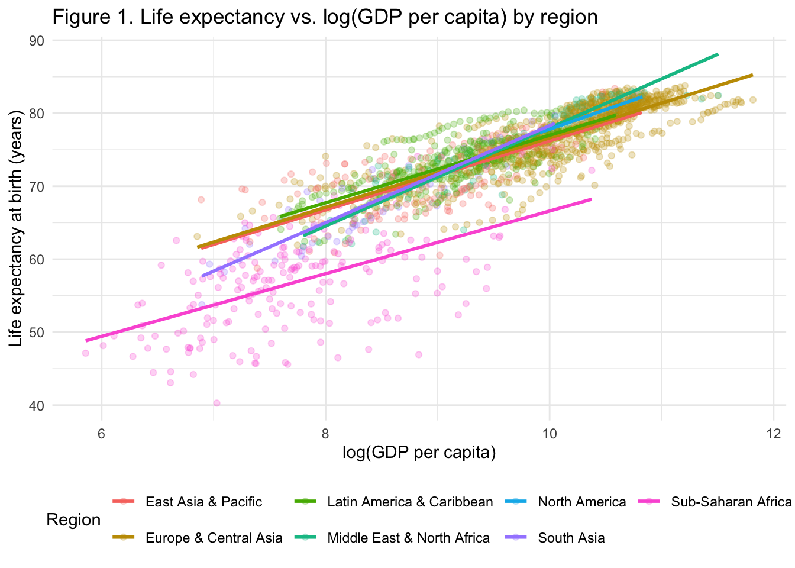
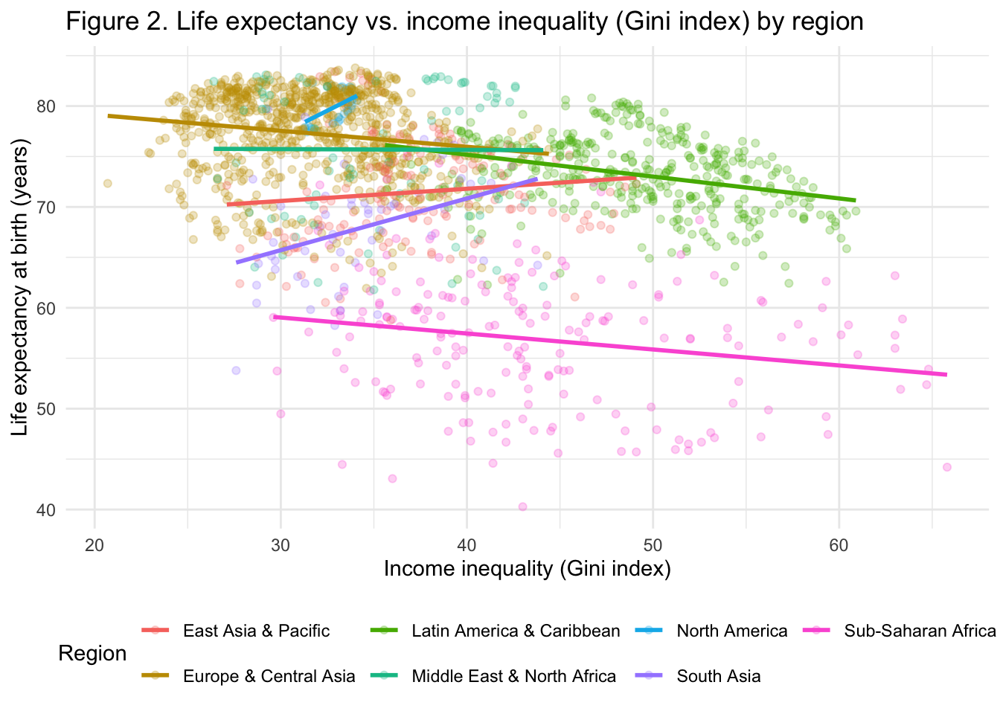
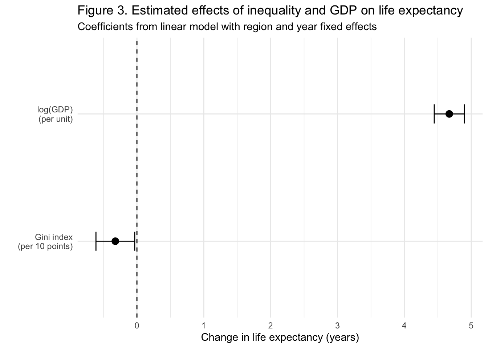
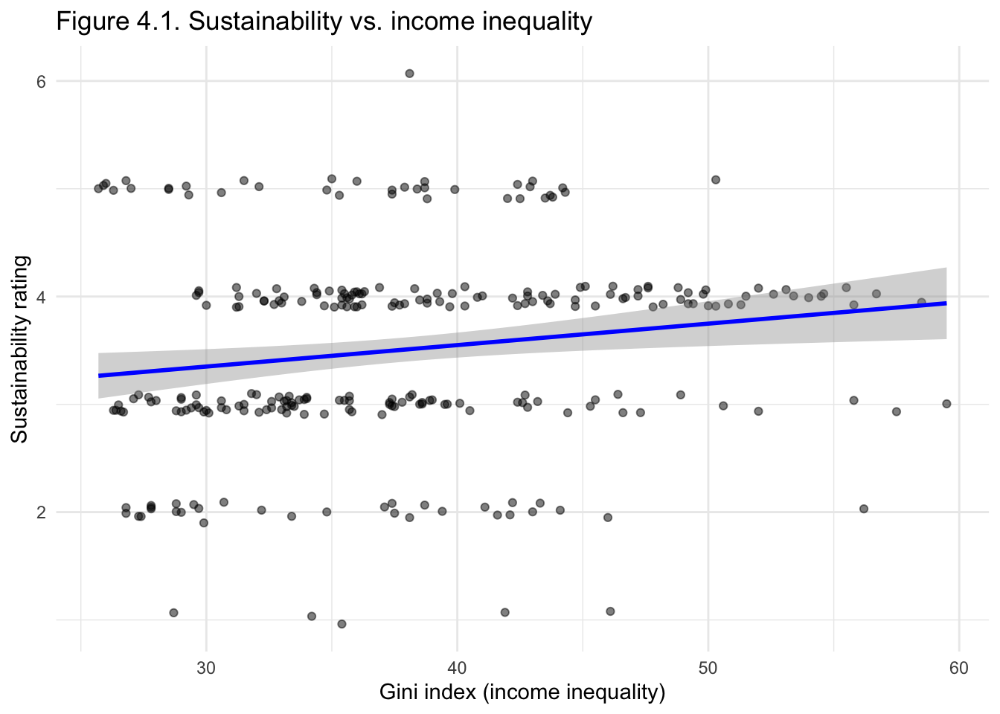
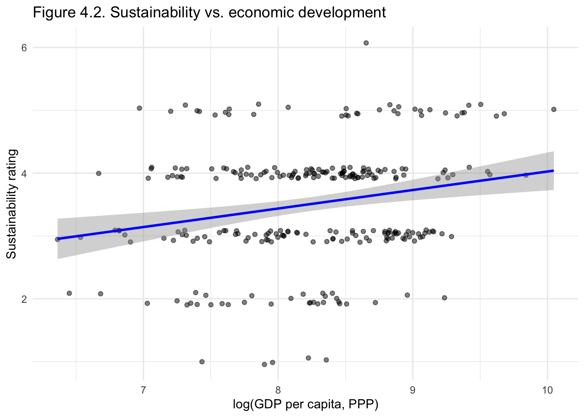
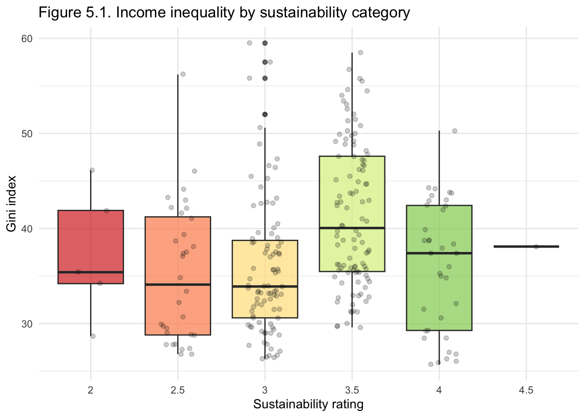
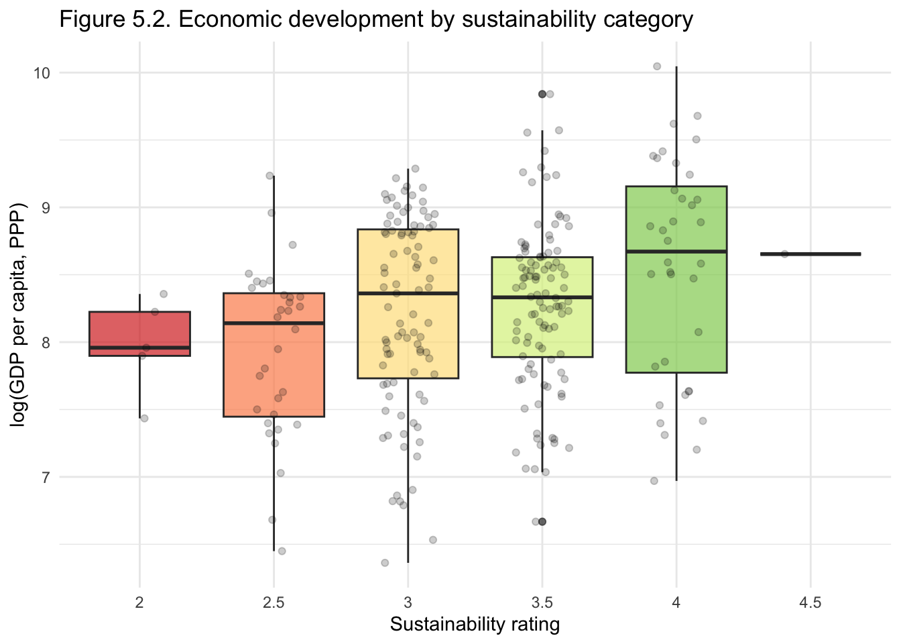
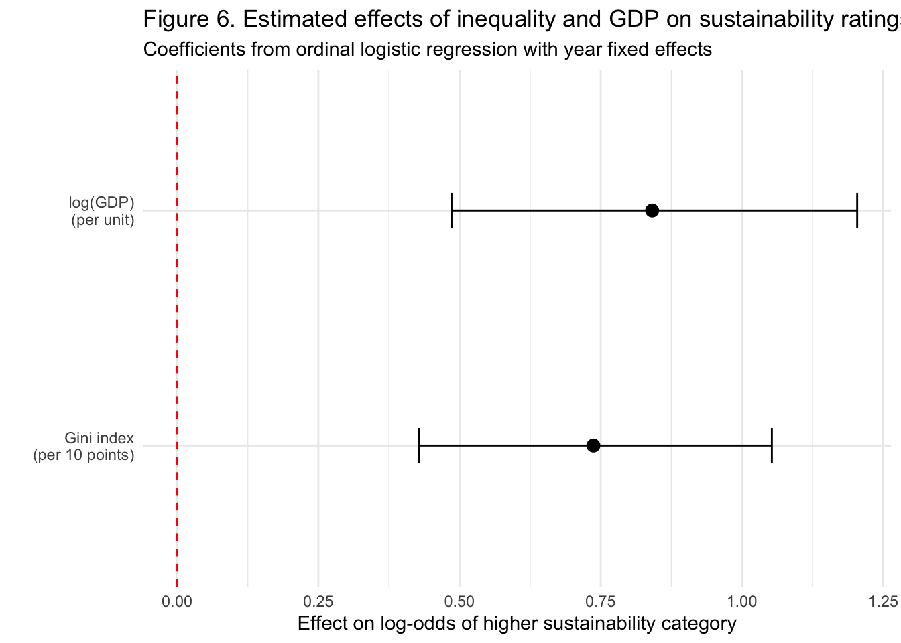

“Nice relevant title for the analysis”
“Group member names”
Executive Summary
Stakeholder: A policy analyst at an international development agency (e.g., the World Bank or UNDP) who advises regional directors on where to prioritize funding and policy support to improve both population health and environmental sustainability in low- and middle-income countries.
In this project we use harmonized international data to understand how income inequality relates to two outcomes that matter for global development: population health and environmental sustainability. For our first research question, we analyze 1,721 country-year observations from 2000–2023 and fit regression models with region-specific effects to study how income inequality (Gini index) and economic development (log GDP per capita) are associated with life expectancy at birth across seven World Bank regions. For our second research question, we focus on 269 country-year observations from 74 low- and lower-middle-income countries between 2005–2022 and fit an ordinal logistic regression model to test whether income inequality is linked to the World Bank’s CPIA environmental sustainability rating after accounting for log GDP per capita and year. Our goal is not to prove causality, but to give a regional policy advisor a clear view of when inequality seems to move with worse outcomes, and when other factors appear to dominate.
Across countries and years, we find that higher GDP per capita is consistently and strongly associated with longer life expectancy in every region, while the relationship between income inequality and life expectancy is weaker and highly region-dependent. In most regions, once we control for GDP, inequality has only a small or statistically uncertain association with life expectancy; Sub-Saharan Africa is the main exception, where higher inequality is clearly linked with shorter lives. For environmental sustainability, we see a different pattern. In our ordinal logistic model for CPIA environmental sustainability ratings, both higher log GDP per capita and higher income inequality are associated with better sustainability scores, with GDP showing the larger and more robust effect. This positive association between inequality and sustainability runs counter to our initial expectations and likely reflects structural differences and unmeasured factors in the IDA-eligible countries covered by the CPIA. Taken together, our results suggest that policies aimed at raising income levels are most reliably linked to gains in life expectancy, while inequality may matter in specific regional contexts for health and does not provide a simple, standalone signal for environmental sustainability performance in low- and lower-middle-income countries.
1. Problem Motivation
Over the last few decades, global life expectancy has gone up, but there are still big gaps between and within regions. Life expectancy at birth is a common summary of population health because it rolls up mortality at different ages into one number that is easy to compare across countries. At the same time, global policy agendas like the UN Sustainable Development Goals make it clear that health outcomes are linked to broader issues such as income, inequality, and environmental sustainability. For a development agency deciding where to focus limited resources, it is not enough to know that some countries are doing better than others. They need to understand which factors are most strongly associated with better outcomes.
Income inequality is often discussed as one of those factors. Some researchers argue that more unequal societies tend to have worse health and social outcomes, even when average income is high. Others are more cautious and suggest that the relationship between inequality and health depends a lot on context and stage of development. In parallel, institutions like the World Bank track how strong a country’s policies and institutions are for protecting the environment, because these scores affect access to concessional finance and long term sustainability planning.
In this project, we use harmonized international data from UNdata and World Bank sources to link these pieces together. First, we look at how income inequality (measured by the Gini index) and economic development (GDP per capita) are associated with life expectancy across countries, and whether these patterns differ by region. Second, we test whether income inequality is related to countries’ environmental sustainability performance, as measured by the CPIA environmental sustainability rating, after controlling for GDP per capita. Together, these two analyses are designed to help an international development agency judge whether inequality is a meaningful signal for where they might see joint benefits in both population health and environmental sustainability.
2. Results
2.1 Life expectancy results
2.1.1 Descriptive patterns: GDP, inequality, and life expectancy
Across all regions, countries with higher GDP per capita tend to have longer life expectancy. Figure 1 plots life expectancy against log(GDP per capita), with separate trend lines by region. The positive relationship is clear in every region, though the slope differs somewhat. In practical terms, moving from very low to middle levels of GDP per capita is associated with several additional years of expected life at birth. This confirms that economic development is a central correlate of population health in our data.
By contrast, the raw relationship between income inequality and life expectancy is weaker and more mixed. Figure 2 shows life expectancy against the Gini index, again with separate regional trend lines. In many regions, the fitted lines are relatively flat or only slightly sloped, indicating that higher inequality is not systematically associated with higher or lower life expectancy on its own. This suggests that inequality is not a simple standalone predictor of population health once we look across diverse regional contexts.

2.1.2 Regression results: global effects of GDP and inequality
To move beyond these descriptive patterns, we fit a linear regression model with life expectancy as the outcome and the Gini index, log(GDP per capita), region indicators, and year fixed effects as predictors. This model uses the full panel of 1,721 country–year observations and controls for broad regional differences and global time trends.
The model(Table 1) confirms that economic development is strongly and positively associated with life expectancy. Holding inequality, region, and year constant, higher log(GDP per capita) is associated with longer life expectancy, and the confidence interval for this effect is well above zero. In contrast, the global coefficient on the Gini index is much smaller in magnitude and closer to zero, indicating that, on average across regions and years, inequality is only weakly related to life expectancy once income is taken into account.
| Variable | Coefficient | Lower | Upper |
|---|---|---|---|
| Gini index | |||
| (per 10 points) | -0.32 | -0.61 | -0.03 |
| log(GDP) | |||
| (per unit) | 4.67 | 4.45 | 4.90 |

Figure 3 summarizes these regression estimates. The bar for log(GDP) sits well above zero with a relatively narrow confidence interval, indicating a robust positive effect. The bar for the Gini index is closer to zero and its interval overlaps values that are small in practice, which is consistent with the idea that inequality is not a strong global driver of life expectancy when income and time are controlled.
2.1.3 Regional differences and robustness
Although the global effect of inequality is weak, our region-specific analysis shows that this masks important heterogeneity. When we allow the Gini–life expectancy relationship to vary by region (see technical appendix), Sub-Saharan Africa emerges as the main exception. In this region, higher inequality is clearly associated with lower life expectancy even after controlling for GDP per capita and year. In other regions, the inequality slope is much closer to zero and often statistically indistinguishable from no effect.
We checked whether these results depend on a small number of influential country–year observations. Standard diagnostic plots indicate some influential points, which is common in cross-country data, but re-estimating the models after excluding them does not materially change the main conclusions. The strong positive association between economic development and life expectancy persists, and the pattern that inequality matters more in Sub-Saharan Africa than elsewhere remains. This gives us more confidence that the findings are not driven by a few extreme cases.
2.2 Sustainability results:
2.2.1 Descriptive patterns: inequality, GDP, and sustainability ratings
We then focus on 269 country–year observations from low- and lower-middle-income countries with CPIA environmental sustainability ratings. Figure 4 shows simple bivariate relationships between the sustainability rating and our two main predictors. The left panel plots sustainability against the Gini index and shows a gentle upward slope: countries with higher inequality tend to have slightly higher sustainability ratings on average, although points are widely scattered. The right panel plots sustainability against log(GDP per capita) and shows a clearer upward trend, with higher-income countries more likely to have higher sustainability ratings.


Figure 5 looks at the same relationships by sustainability category. The Gini boxplots show that median inequality increases slightly from lower to higher sustainability categories, but there is substantial overlap in the distributions. In other words, countries with similar sustainability ratings can have quite different levels of inequality. In contrast, the log(GDP) boxplots show a clearer separation across categories, with higher-rated countries consistently having higher median GDP per capita. This suggests that economic development is a stronger differentiator of sustainability performance than inequality.


2.2.2 Ordinal logistic regression results
To formally test how inequality and income relate to sustainability ratings, we fit an ordinal logistic regression (proportional odds model) with the ordered sustainability rating as the outcome and Gini, log(GDP per capita), and year fixed effects as predictors. This model respects the ordered nature of the CPIA score and controls for common shocks and possible changes in rating practices over time.
The regression results(Table 2) show that both inequality and GDP are positively associated with higher sustainability ratings, holding year constant. The estimated log-odds coefficient for the Gini index is about 0.074, which corresponds to an odds ratio of about 1.08 per one-point increase in the Gini index. Substantively, a 10-point increase in inequality (for example, from 30 to 40) is associated with roughly a doubling of the odds of being in a higher sustainability category. For log(GDP), the estimated coefficient is about 0.84, corresponding to an odds ratio of about 2.3. A one-unit increase in log(GDP)—roughly a 2.7× increase in GDP per capita—is therefore associated with more than double the odds of being in a higher sustainability category. Both effects are highly statistically significant.
| term | estimate | std.error | statistic | conf.low | conf.high | coef.type |
|---|---|---|---|---|---|---|
| Gini | 1.076 | 0.016 | 4.624 | 1.044 | 1.111 | coefficient |
| log_GDP | 2.319 | 0.183 | 4.598 | 1.625 | 3.334 | coefficient |
| factor(Year)2006 | 1.037 | 0.602 | 0.060 | 0.317 | 3.388 | coefficient |
| factor(Year)2007 | 0.988 | 0.582 | -0.021 | 0.316 | 3.108 | coefficient |
| factor(Year)2008 | 0.907 | 0.649 | -0.151 | 0.253 | 3.251 | coefficient |
| factor(Year)2009 | 1.111 | 0.587 | 0.179 | 0.350 | 3.521 | coefficient |
| factor(Year)2010 | 1.128 | 0.553 | 0.217 | 0.381 | 3.351 | coefficient |
| factor(Year)2011 | 0.609 | 0.575 | -0.861 | 0.197 | 1.889 | coefficient |
| factor(Year)2012 | 0.952 | 0.589 | -0.083 | 0.300 | 3.035 | coefficient |
| factor(Year)2013 | 0.658 | 0.659 | -0.635 | 0.180 | 2.410 | coefficient |
| factor(Year)2014 | 1.072 | 0.620 | 0.112 | 0.317 | 3.632 | coefficient |
| factor(Year)2015 | 1.151 | 0.587 | 0.240 | 0.364 | 3.651 | coefficient |
| factor(Year)2016 | 2.257 | 0.670 | 1.215 | 0.608 | 8.495 | coefficient |
| factor(Year)2017 | 0.999 | 0.819 | -0.001 | 0.201 | 5.047 | coefficient |
| factor(Year)2018 | 2.154 | 0.582 | 1.319 | 0.690 | 6.794 | coefficient |
| factor(Year)2019 | 2.551 | 0.638 | 1.469 | 0.733 | 9.014 | coefficient |
| factor(Year)2020 | 3.584 | 0.861 | 1.482 | 0.656 | 19.903 | coefficient |
| factor(Year)2021 | 1.869 | 0.688 | 0.909 | 0.487 | 7.289 | coefficient |
| factor(Year)2022 | 1.200 | 0.805 | 0.226 | 0.247 | 5.936 | coefficient |

Figure 6 compares the coefficients for Gini and log(GDP) on the log-odds scale. Both bars are clearly above zero, but the bar for log(GDP) is taller, reflecting its stronger association with sustainability ratings. This supports the idea that among low- and lower-middle-income countries, economic development is a more powerful predictor of environmental institutional strength than income distribution, even though inequality also has a positive association.
Year fixed effects are generally small and imprecise, and the likelihood ratio test shows that including Gini, log(GDP), and year jointly improves model fit over a model with only intercepts. McFadden’s pseudo-R² is modest (around 0.06), which is typical for institutional rating data and reflects the fact that sustainability outcomes depend on many unobserved country-specific factors. For our purposes, the key point is that the estimated associations for Gini and GDP are statistically robust and directionally clear.
2.2.3 Counterintuitive inequality effect
The positive sign on the Gini coefficient is counterintuitive, because we might expect more unequal societies to have weaker environmental institutions. Several explanations are possible. First, CPIA ratings are only available for IDA-eligible (low and lower-middle-income) countries. Within this restricted group, countries with somewhat higher inequality may also have more diversified economies, larger urban centers, or stronger statistical systems, all of which can support environmental policy frameworks. Second, inequality and sustainability may both be driven by deeper structural factors, such as governance capacity, that we do not observe. Third, because CPIA scores are based on expert judgment, they may emphasize formal policy frameworks and institutional arrangements rather than distributional outcomes.
Whatever the mechanism, the practical takeaway is that inequality alone is not a reliable screening signal for environmental sustainability performance in this set of countries. GDP per capita is more strongly and consistently associated with higher sustainability ratings, and the positive inequality effect should be interpreted with caution and explored further in future work rather than treated as evidence that higher inequality is desirable.
2.3 Integrated implications
Looking across the two research questions, we see a consistent pattern in how economic development and inequality relate to our outcomes. For life expectancy, log(GDP per capita) is the dominant predictor: richer countries have longer life expectancy in every region, and this relationship remains strong after we control for year and region fixed effects. Inequality, in contrast, plays a secondary role. Its global effect is small and imprecise, and only in Sub-Saharan Africa do we see a clear negative association between higher inequality and shorter lives. This suggests that inequality can matter for health, but its impact is context dependent and interacts with broader structural conditions.
For environmental sustainability, both inequality and GDP per capita are positively associated with higher CPIA sustainability ratings, but GDP again has the stronger effect. The positive inequality coefficient is surprising and likely reflects sample restrictions, measurement issues, and unobserved confounders rather than a simple causal relationship. In practice, sustainability ratings appear to track a country’s overall institutional and economic capacity more than its income distribution.
For a regional policy advisor, these findings point to a few practical implications. First, investments that raise income levels—through growth, productivity, and basic infrastructure—are the most reliable levers for improving life expectancy across regions and for supporting stronger environmental institutions in low- and lower-middle-income countries. Second, inequality is not a universal signal of poor outcomes. It deserves special attention in places like Sub-Saharan Africa, where it appears more tightly connected to health, but it should not be used in isolation as a proxy for environmental sustainability performance. Finally, because both outcomes are influenced by many unobserved factors, it will be important to combine this kind of cross-country statistical evidence with country-specific knowledge when prioritizing interventions and evaluating progress.
3. Methodology
Our analysis uses regression models as descriptive tools to understand how income inequality and economic development relate to life expectancy and environmental sustainability. In each case we control for other factors such as year and region so that we can interpret the coefficients as associations holding those factors constant, not as causal effects.
3.1 Models for life expectancy
To study life expectancy at birth (measured in years), we fit linear regression models. In these models, life expectancy is explained by the Gini index (income inequality), log GDP per capita (PPP), region, and year.
The basic idea is simple. The coefficient on log GDP per capita tells us how many years of additional life expectancy are associated with a one unit increase in log GDP, holding inequality, region, and year fixed. Because log GDP is on a log scale, this roughly corresponds to a 2.7 times increase in income. In practical terms, this coefficient answers: “If two countries are similar in inequality and observed year but one is richer, how much longer do people in the richer country tend to live?”
The coefficient on the Gini index tells us how life expectancy changes when inequality rises, after controlling for GDP, region, and year. In the results we rescale this coefficient to a 10 point increase in the Gini index so it has a more intuitive interpretation, for example: “A 10 point increase in inequality is associated with about X years difference in life expectancy, holding other factors constant.”
Because relationships may differ across regions, we also estimate a version of the model that allows the Gini effect and the GDP effect to vary by region. In that specification each region has its own slope for inequality. These region specific coefficients let us say things like: “Within Sub-Saharan Africa, higher inequality is associated with lower life expectancy even after we adjust for GDP and year, while in many other regions the inequality slope is close to zero.”
3.2 Models for sustainability ratings
For environmental sustainability, the outcome is the CPIA environmental sustainability rating. This is an ordered score rather than a continuous variable, so we use an ordinal logistic regression (proportional odds model) instead of a linear model.
In this model, the predictors are the Gini index, log GDP per capita, and year. The model estimates how these predictors change the log odds that a country receives a higher sustainability rating rather than a lower one, holding the other variables fixed.
The Gini coefficient in this model can be interpreted through its odds ratio. When we exponentiate the coefficient, we obtain a number greater than 1. For example, an odds ratio of about 1.08 means that a one point increase in the Gini index is associated with an 8 percent increase in the odds of being in a higher sustainability category, holding GDP and year constant. A 10 point increase in inequality would then roughly double those odds. The log GDP coefficient is interpreted in the same way. Its odds ratio tells us how much the odds of a higher sustainability rating change when GDP per capita increases on the log scale, for example when income doubles or triples.
Year indicators in the model absorb any global shifts in CPIA scoring standards or common shocks that affect all countries in the same calendar year. This lets us focus on how differences in inequality and income across countries, rather than across years, line up with differences in sustainability ratings
4. Recommended Next Steps
Based on our results and the limitations of the current data, we see four concrete next steps for the stakeholder.
4.1. Treat economic development as the primary health and sustainability lever
Our findings consistently show that higher GDP per capita is strongly associated with longer life expectancy and with stronger environmental sustainability ratings. The first priority is to continue supporting country programs that expand basic infrastructure, productivity, and fiscal space, especially in lower income countries. In practice this means: prioritizing investments in primary health systems, clean water and sanitation, and energy access, and pairing them with support for domestic revenue and private sector development. We should also encourage country teams to track how these growth oriented investments translate into gains in life expectancy and sustainability scores over time.
4.2. Address inequality where it is most closely linked to poor outcomes
Inequality is not a universal predictor in our analysis. Its association with life expectancy is weak in many regions, but meaningfully negative in Sub Saharan Africa even after we control for income. For sustainability ratings, the positive association is likely driven by sample restrictions and unobserved factors rather than a simple causal effect. Our recommendation is to treat inequality as a targeted risk flag rather than a blanket target. Country teams working in Sub Saharan Africa should pair growth support with programs that expand access to basic services for the poorest households, such as primary health care, nutrition, and rural infrastructure. In other regions, inequality focused interventions should be justified by local evidence rather than assumed to improve average life expectancy or environmental performance on their own.
4.3. Strengthen data and diagnostic tools before tying finance to inequality or sustainability scores
Both outcomes in this project rely on imperfect indicators. Life expectancy estimates and Gini coefficients can differ across sources and methods, and CPIA sustainability ratings are based on expert judgment for a restricted set of low and lower middle income countries. Before using inequality or sustainability scores to trigger financing decisions, we recommend the following. First, invest in country statistical capacity to improve the coverage and comparability of household surveys and national accounts. Second, complement CPIA scores with objective indicators such as air quality, deforestation rates, and enforcement data where possible. Third, pilot simple dashboards that combine our regression based risk signals with local indicators so that regional teams can see where model based warnings align with country level diagnostics and where they do not.
4.4. Deepen the analysis with richer covariates and country level case work
Our models are intentionally simple and leave out many factors that likely matter, such as governance quality, political regime, natural resource dependence, and urbanization. A natural next step is to link the current dataset with additional public indicators, refit the models, and test whether the key patterns hold. In parallel, we recommend selecting a small set of countries that sit off the expected lines in our figures, for example countries with relatively low life expectancy given their income or unusually high sustainability scores given their inequality. Country teams could use these cases to explore mechanisms that our global models cannot capture, and to identify specific policy levers that are feasible in each context.
Taken together, these steps let us use the current results as an initial prioritization tool. We rely on economic development as the most robust driver of both health and environmental institutions, treat inequality as a context dependent risk factor, improve the quality of the underlying data, and then combine global patterns with country specific knowledge before making large policy or financing moves.
Appendix A. Data
Provide more background on the data, including any cleaning that needed to be done that affects the model (e.g., were levels of a categorical variable combined? Did you exclude missing values? If so, how many?). Data cleaning that does not affect the model, such as creating factor variables, does not need to be mentioned (it is always assumed that some cleaning is necessary).
Appendix B. Models for Research Question 1
Describe the process you used to conduct analysis for both research questions. Describe the types of models that you fit and why they were appropriate, and the assumptions for each model. Specify the covariates in each model, and make sure to include both primary independent variables relevant to the research question and potential confounding variables. You are required to use at least one interaction term in one of your models. Describe how you assessed your models and any changes you made based on the assessment. Finally, present full summary tables that include estimates, standard errors, confidence intervals, and p-values. These should be on the exponential scale for GLMs.
Appendix C. Models for Research Question 2
Appendix D. Technical Next Steps
Finally, describe limitations that you could not address and what you might do next to improve the analysis. This can include impractical steps in the context of a class project such as “collect more data on X.”
we could probably talk about using different models if we want and using more complete datasets especially for gini and sustainability
Reference
Deaton, A. (2003). Health, inequality, and economic development. Journal of Economic Literature, 41(1), 113–158.
Parrish, R. G. (2010). Measuring population health outcomes. Preventing Chronic Disease, 7(4), A71.
United Nations. (2015). Transforming our world: The 2030 Agenda for Sustainable Development. United Nations General Assembly.
United Nations Statistics Division. (n.d.). UNdata: About. UNdata. https://data.un.org/
Wilkinson, R. G. (2011). Inequality: The enemy between us? European Journal of Social Psychology, 41(2), 255–266.
Wilkinson, R. G., & Pickett, K. E. (2009). The spirit level: Why more equal societies almost always do better. Allen Lane.
World Bank. (2010). The World Bank’s country policy and institutional assessment: An evaluation. Independent Evaluation Group, World Bank.
World Bank. (2022). Country Policy and Institutional Assessment (CPIA) – methodology and criteria. World Bank Group.
[1] 4